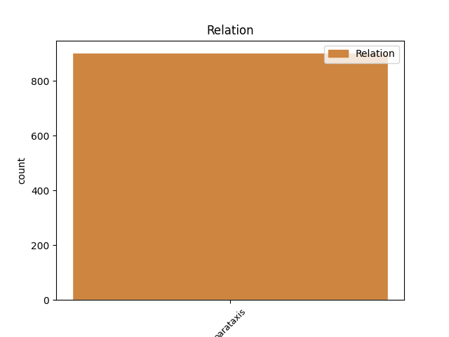
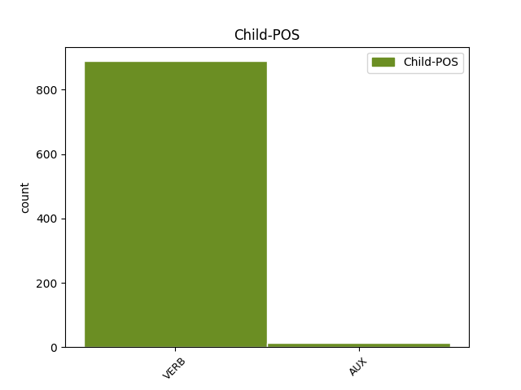

Distribution of features within this leaf



Agreement Rules sorted by frequency.
- When the dependent token is the parataxis(parataxis) of the head token,
1 Vi _ _ _ _ 0 _ _ _
2 er være AUX _ Mood=Ind|Tense=Pres|VerbForm=Fin 0 _ _ _
3 stolte _ _ _ _ 0 _ _ _
4 av _ _ _ _ 0 _ _ _
5 landet _ _ _ _ 0 _ _ _
6 vårt _ _ _ _ 0 _ _ _
7 , _ _ _ _ 0 _ _ _
8 og _ _ _ _ 0 _ _ _
9 jeg _ _ _ _ 0 _ _ _
10 vil _ _ _ _ 0 _ _ _
11 kjempe _ _ _ _ 0 _ _ _
12 for _ _ _ _ 0 _ _ _
13 at _ _ _ _ 0 _ _ _
14 ikke _ _ _ _ 0 _ _ _
15 så _ _ _ _ 0 _ _ _
16 mange _ _ _ _ 0 _ _ _
17 flytter _ _ _ _ 0 _ _ _
18 herfra _ _ _ _ 0 _ _ _
19 , _ _ _ _ 0 _ _ _
20 sier si VERB _ Mood=Ind|Tense=Pres|VerbForm=Fin 2 parataxis _ _
21 Sunneva _ _ _ _ 0 _ _ _
22 . _ _ _ _ 0 _ _ _
Disagree Examples:
1 - _ _ _ _ 0 _ _ _
2 Vi _ _ _ _ 0 _ _ _
3 er være AUX _ Mood=Ind|Tense=Pres|VerbForm=Fin 0 _ _ _
4 realistiske _ _ _ _ 0 _ _ _
5 nok _ _ _ _ 0 _ _ _
6 til _ _ _ _ 0 _ _ _
7 å _ _ _ _ 0 _ _ _
8 innse _ _ _ _ 0 _ _ _
9 at _ _ _ _ 0 _ _ _
10 det _ _ _ _ 0 _ _ _
11 første _ _ _ _ 0 _ _ _
12 budsjettet _ _ _ _ 0 _ _ _
13 må _ _ _ _ 0 _ _ _
14 vi _ _ _ _ 0 _ _ _
15 søke _ _ _ _ 0 _ _ _
16 støtte _ _ _ _ 0 _ _ _
17 i _ _ _ _ 0 _ _ _
18 Fr.p. _ _ _ _ 0 _ _ _
19 for _ _ _ _ 0 _ _ _
20 - _ _ _ _ 0 _ _ _
21 primært _ _ _ _ 0 _ _ _
22 eller _ _ _ _ 0 _ _ _
23 subsidiært _ _ _ _ 0 _ _ _
24 , _ _ _ _ 0 _ _ _
25 sa si VERB _ Mood=Ind|Tense=Past|VerbForm=Fin 3 parataxis _ _
26 han _ _ _ _ 0 _ _ _
27 i _ _ _ _ 0 _ _ _
28 går _ _ _ _ 0 _ _ _
29 . _ _ _ _ 0 _ _ _
1 - _ _ _ _ 0 _ _ _
2 Vi _ _ _ _ 0 _ _ _
3 får få AUX _ Mood=Ind|Tense=Pres|VerbForm=Fin 0 _ _ _
4 se _ _ _ _ 0 _ _ _
5 hvordan _ _ _ _ 0 _ _ _
6 eventuelt _ _ _ _ 0 _ _ _
7 utviklingen _ _ _ _ 0 _ _ _
8 blir _ _ _ _ 0 _ _ _
9 , _ _ _ _ 0 _ _ _
10 bemerket bemerke VERB _ Mood=Ind|Tense=Past|VerbForm=Fin 3 parataxis _ _
11 han _ _ _ _ 0 _ _ _
12 . _ _ _ _ 0 _ _ _
1 Den _ _ _ _ 0 _ _ _
2 er være AUX _ Mood=Ind|Tense=Pres|VerbForm=Fin 0 _ _ _
3 ikke _ _ _ _ 0 _ _ _
4 bare _ _ _ _ 0 _ _ _
5 taler _ _ _ _ 0 _ _ _
6 og _ _ _ _ 0 _ _ _
7 avtaler _ _ _ _ 0 _ _ _
8 , _ _ _ _ 0 _ _ _
9 minnet minne VERB _ Mood=Ind|Tense=Past|VerbForm=Fin 2 parataxis _ _
10 han _ _ _ _ 0 _ _ _
11 om _ _ _ _ 0 _ _ _
12 . _ _ _ _ 0 _ _ _
1 - _ _ _ _ 0 _ _ _
2 FN _ _ _ _ 0 _ _ _
3 er være AUX _ Mood=Ind|Tense=Pres|VerbForm=Fin 0 _ _ _
4 eneste _ _ _ _ 0 _ _ _
5 globale _ _ _ _ 0 _ _ _
6 organisasjon _ _ _ _ 0 _ _ _
7 som _ _ _ _ 0 _ _ _
8 arbeider _ _ _ _ 0 _ _ _
9 for _ _ _ _ 0 _ _ _
10 fred _ _ _ _ 0 _ _ _
11 og _ _ _ _ 0 _ _ _
12 forebygger _ _ _ _ 0 _ _ _
13 krig _ _ _ _ 0 _ _ _
14 , _ _ _ _ 0 _ _ _
15 og _ _ _ _ 0 _ _ _
16 vi _ _ _ _ 0 _ _ _
17 støtter _ _ _ _ 0 _ _ _
18 mannen _ _ _ _ 0 _ _ _
19 som _ _ _ _ 0 _ _ _
20 har _ _ _ _ 0 _ _ _
21 gjort _ _ _ _ 0 _ _ _
22 mer _ _ _ _ 0 _ _ _
23 enn _ _ _ _ 0 _ _ _
24 andre _ _ _ _ 0 _ _ _
25 for _ _ _ _ 0 _ _ _
26 disse _ _ _ _ 0 _ _ _
27 prinsippene _ _ _ _ 0 _ _ _
28 ( _ _ _ _ 0 _ _ _
29 les _ _ _ _ 0 _ _ _
30 : _ _ _ _ 0 _ _ _
31 Kofi _ _ _ _ 0 _ _ _
32 Annan _ _ _ _ 0 _ _ _
33 ) _ _ _ _ 0 _ _ _
34 , _ _ _ _ 0 _ _ _
35 sa si VERB _ Mood=Ind|Tense=Past|VerbForm=Fin 3 parataxis _ _
36 blant _ _ _ _ 0 _ _ _
37 annet _ _ _ _ 0 _ _ _
38 Egeland _ _ _ _ 0 _ _ _
39 . _ _ _ _ 0 _ _ _
1 Ingen _ _ _ _ 0 _ _ _
2 kan kunne AUX _ Mood=Ind|Tense=Pres|VerbForm=Fin 0 _ _ _
3 i _ _ _ _ 0 _ _ _
4 dag _ _ _ _ 0 _ _ _
5 hevde _ _ _ _ 0 _ _ _
6 at _ _ _ _ 0 _ _ _
7 de _ _ _ _ 0 _ _ _
8 ikke _ _ _ _ 0 _ _ _
9 kjenner _ _ _ _ 0 _ _ _
10 til _ _ _ _ 0 _ _ _
11 den _ _ _ _ 0 _ _ _
12 prisen _ _ _ _ 0 _ _ _
13 som _ _ _ _ 0 _ _ _
14 de _ _ _ _ 0 _ _ _
15 fattige _ _ _ _ 0 _ _ _
16 og _ _ _ _ 0 _ _ _
17 hjemløse _ _ _ _ 0 _ _ _
18 må _ _ _ _ 0 _ _ _
19 betale _ _ _ _ 0 _ _ _
20 , _ _ _ _ 0 _ _ _
21 selv _ _ _ _ 0 _ _ _
22 om _ _ _ _ 0 _ _ _
23 de _ _ _ _ 0 _ _ _
24 i _ _ _ _ 0 _ _ _
25 like _ _ _ _ 0 _ _ _
26 stor _ _ _ _ 0 _ _ _
27 grad _ _ _ _ 0 _ _ _
28 som _ _ _ _ 0 _ _ _
29 oss _ _ _ _ 0 _ _ _
30 fortjener _ _ _ _ 0 _ _ _
31 å _ _ _ _ 0 _ _ _
32 få _ _ _ _ 0 _ _ _
33 tilgang _ _ _ _ 0 _ _ _
34 på _ _ _ _ 0 _ _ _
35 menneskeverd _ _ _ _ 0 _ _ _
36 , _ _ _ _ 0 _ _ _
37 grunnleggende _ _ _ _ 0 _ _ _
38 rettigheter _ _ _ _ 0 _ _ _
39 , _ _ _ _ 0 _ _ _
40 trygghet _ _ _ _ 0 _ _ _
41 , _ _ _ _ 0 _ _ _
42 mat _ _ _ _ 0 _ _ _
43 og _ _ _ _ 0 _ _ _
44 utdannelse _ _ _ _ 0 _ _ _
45 " _ _ _ _ 0 _ _ _
46 , _ _ _ _ 0 _ _ _
47 sa si VERB _ Mood=Ind|Tense=Past|VerbForm=Fin 2 parataxis _ _
48 han _ _ _ _ 0 _ _ _
49 . _ _ _ _ 0 _ _ _